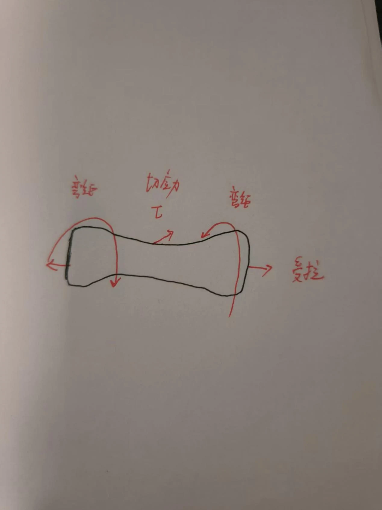
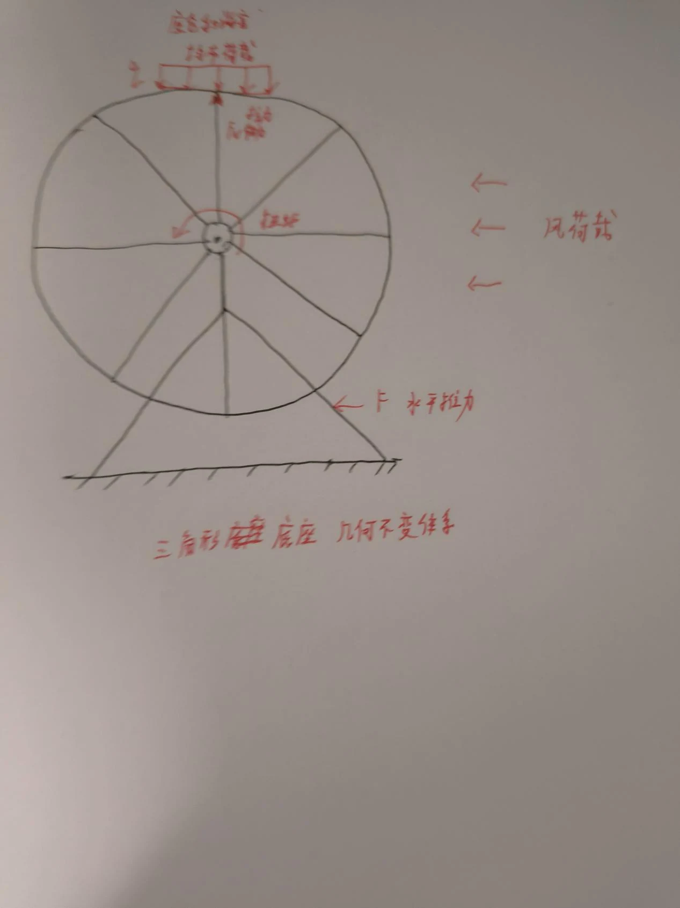
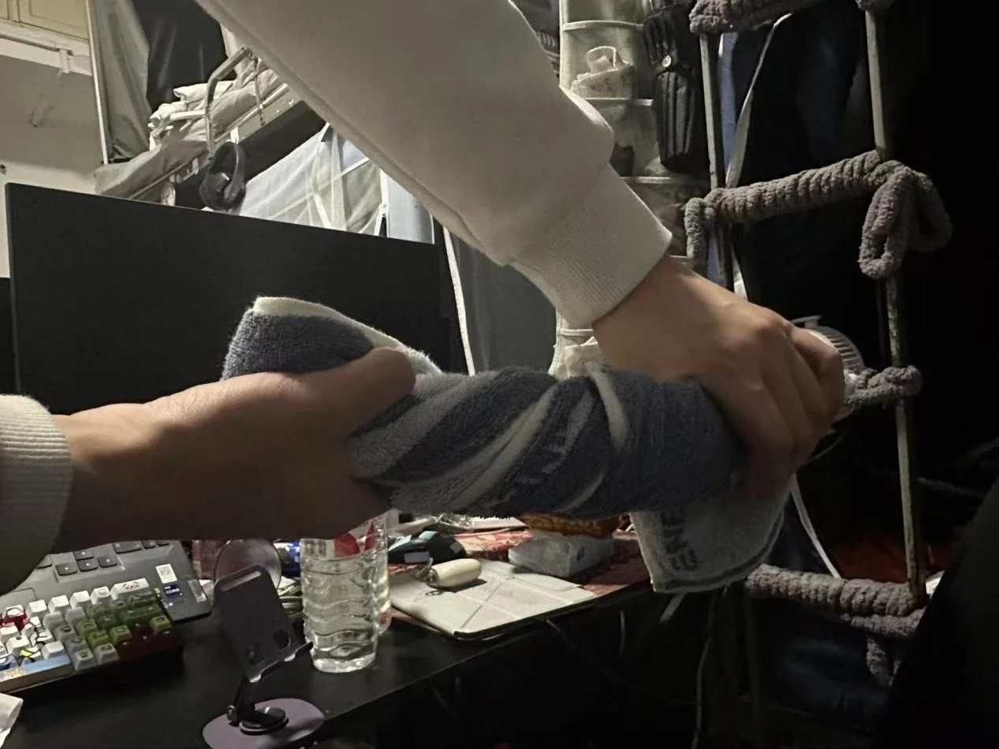
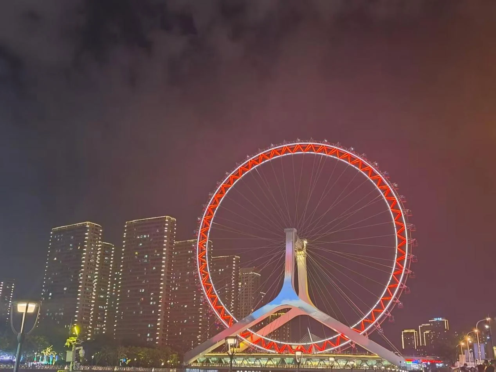

大连交通大学 · 智能建造23
我的原作从拧毛巾到天津之眼：生活中的力学构件与设计智慧
黄俊儒
一、力学现象解释
（一）核心意义
生活中的物件（如毛巾、摩天轮）本质是《材料力学》《结构设计原理》中“构件承载与传力”的具象化载体：拧毛巾体现“抗扭构件的应力分布”，此外拧毛巾的过程也让我想起来预应力的概念，天津之眼则是“大跨度结构的协同承载”，二者均通过优化构件形态、材料性能，实现“安全传力、高效承载”的目标，让抽象的力学原理转化为实用功能，这也是我们学习结构设计原理的意义。
（二）关键影响因素
1. 荷载类型：毛巾承受“扭矩”，摩天轮承受“均布荷载+风荷载+扭矩”，荷载形式决定构件的设计侧重抗扭抗风等像我们上课的时候学到的的塔科马海峡大桥受风荷载波坏。
2. 材料性能：毛巾的纤维（低抗扭刚度）、摩天轮的钢材（高抗拉/压强度），材料特性直接影响构件的承载能力与变形特征。
3. 构件形态：毛巾的“长条形态”（易扭转）、摩天轮的“三角形桁架+拉索体系”（几何稳定），形态决定受力路径与效率。
4. 使用需求：毛巾需“易扭转脱水”，摩天轮需“大跨度稳定观光”，需求差异引导构件的功能化设计。
（三）发展趋势
1. 功能适配化：小物件（如毛巾）通过材料改性提升抗扭/吸水效率；大结构（如摩天轮）通过智能控制优化荷载分布。
2. 结构轻量化：大跨度结构采用“柔性构件+稳定体系”（如天津之眼的拉索），在减重的同时提升承载效率。
3. 协同高效化：多构件协同传力（如摩天轮的轮箍-拉索-塔架），替代单一刚性构件，降低材料消耗。
（四）力学图示


生活实例分析
在寝室拍摄

实例1：拧毛巾
拍摄双手拧毛巾的特写，清晰展示毛巾的扭转形态、手部施力的力偶方向，突出纤维的变形状态。
毛巾是典型的“柔性抗扭构件”，其纤维材料的抗扭刚度较低，拧转时易产生扭转变形。双手施加的力偶矩M使毛巾截面产生扭转切应力，截面边缘的纤维应力最大（符合《材料力学》中“抗扭构件截面剪应力与半径成正比”的原理），纤维的相对扭转实现脱水。毛巾的长条形态增大了力臂，降低了施力需求，同时纤维的柔性特性适配“易扭转、易恢复”的使用需求，体现了“材料性能与功能需求匹配”的设计逻辑。
实例2：天津之眼摩天轮

暑假期间在天津拍摄
拍摄天津之眼全景，聚焦轮箍的三角形桁架、辐射拉索、人字塔架，清晰展示构件的组合关系。
天津之眼是“多构件协同承载”的大跨度结构：
1. 轮箍（抗弯+抗扭构件）：采用三角形桁架截面，既增大了抗弯惯性矩（承受均布荷载q），又提升了抗扭刚度（承受驱动扭矩M），符合《材料力学》中“大跨度构件需优化截面形态，提升惯性矩”的原理。
2. 辐射拉索（轴向传力构件）：48根拉索将轮箍的荷载转化为轴向拉力T（轴向传力应力均匀，效率最高），体现了《结构设计原理》中“拉索是大跨度结构的高效传力元件”的设计逻辑。
3. 人字塔架（稳定受压构件）：通过三角形几何不变体系抵抗水平推力F，塔架的箱型截面增大了抗压刚度，避免失稳，契合“受压构件需控制稳定性”的原理。
《结构设计原理》核心内容对照
（一）钢筋配置逻辑的映射
钢筋混凝土结构中“混凝土受压+钢筋受拉”的协同逻辑，在两个实例中均有体现：
拧毛巾：纤维（类似混凝土）承受部分剪应力，手部施力（类似钢筋）提供扭矩，二者协同实现扭转脱水，对毛巾施加扭矩的过程和钢筋预应力布置有些相似。
天津之眼：塔架（类似混凝土）承受轴向压力，拉索（类似受拉钢筋）承担拉力，轮箍（类似钢筋混凝土梁）通过桁架（类似钢筋）与钢管（类似混凝土）的协同，承弯、承扭，这就是天津之眼与课上内容的对比。
（二）构件设计的关联原则
1. 抗扭构件的截面优化：毛巾的“长条截面”（类似抗扭构件的矩形截面）增大了扭转角，适配脱水需求；钢筋混凝土抗扭构件需配置螺旋筋，增大抗扭刚度，对应《结构设计原理》中“抗扭构件需增强截面约束”的原则。
2. 大跨度结构的稳定设计：天津之眼的三角形塔架（类似结构中的支撑体系），对应《结构设计原理》中“几何不变体系是大跨度结构稳定的核心”的要求；拉索的预应力（类似钢筋的预拉力）平衡附加力，提升结构整体刚度。
3. 传力路径的优化：天津之眼的辐射拉索（类似结构中的次梁），将轮箍的荷载分散传递至主轴，对应“传力路径应简洁、均匀”的设计逻辑。
（三）材料与构件的适配性
毛巾的纤维材料（低抗扭刚度）适配“易扭转”功能，对应《结构设计原理》中“材料性能需匹配构件功能”的理念；天津之眼的高强钢材（高抗拉/压强度）适配大跨度承载，对应“大跨度构件需采用高性能材料”的原则。
我个人的选取原因两者有着共同点
两者的核心荷载均包含扭矩。
二者均采用“柔性构件承载+刚性约束稳定”的协同模式，弥补单一构件的性能缺陷。
用手拧毛巾，手和两臂可以看成固定的相当于底座，而摩天轮也有一个固定的“人”字形结构底座,并且毛巾受扭和天津之眼中心转轴施加扭矩有异曲同工之妙。普通生活中的拧毛巾可以联系到大型结构摩天轮，而摩天轮的运动和受力中涵盖着材料力学和结构设计原理的知识。从中我们可以看到生活中处处充满着力学知识，普通的拧毛巾和对旅行中的结构进行思考都是在运用和学习我们的知识。
这是一份便于网页阅读的原作视图，保留提交内容的文字、图片和基本顺序；公开页面不显示学号。